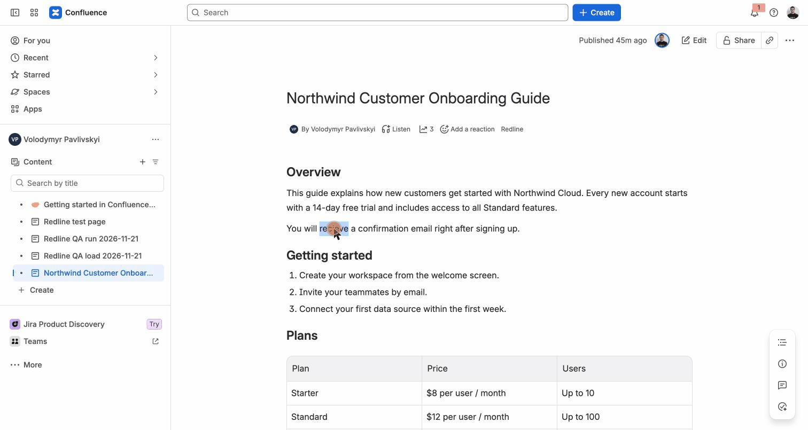
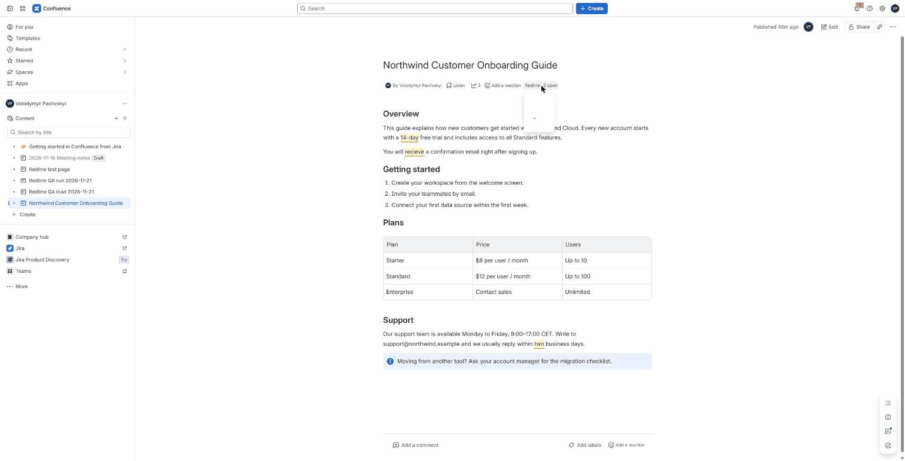
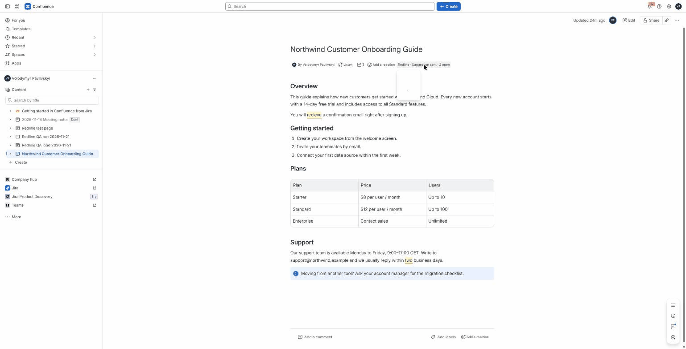
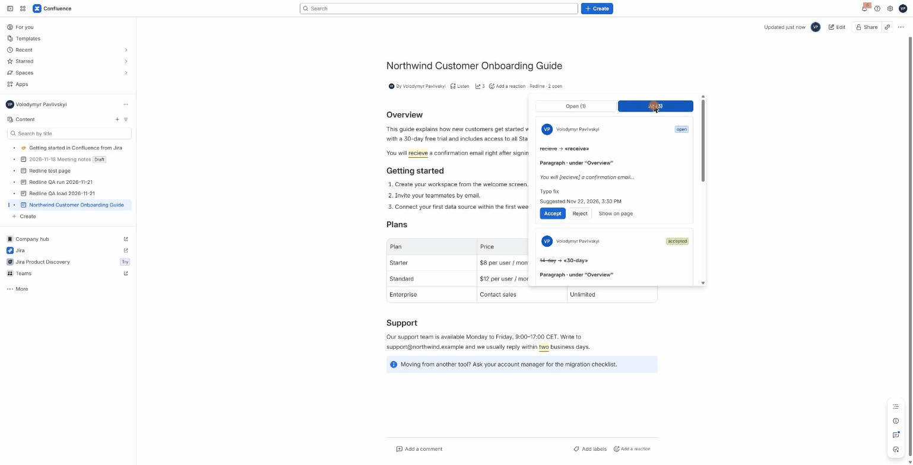
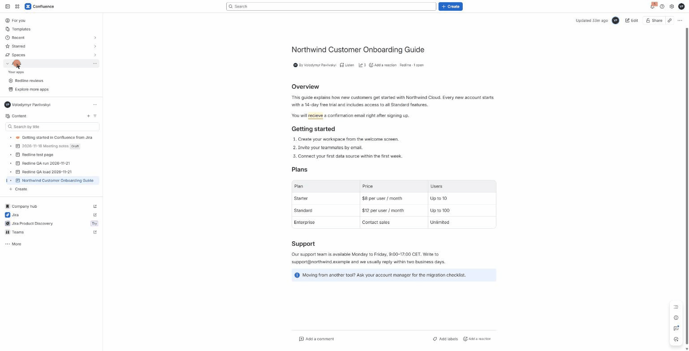

How to use Redline
Redline lets anyone who can read a Confluence page suggest a change to its text. People who can edit the page review each suggestion and apply it with one click.
Installation
- A Confluence site administrator installs Redline from the Atlassian Marketplace.
- No configuration is needed. Redline appears on every page as an item in the page byline (under the title) and as Suggest edit in the text selection menu.
Redline is available in English and German and follows each user's Confluence language.
Suggest an edit
To suggest edits you need permission to view and comment on the page. Without permission to comment, Suggest edit shows “You need permission to comment on this page to suggest edits.” and the form doesn't open.
- On a published page, select the text you want to change. The selection must be within a single paragraph, list item or table cell.
- In the toolbar that appears, click …, then Apps → Suggest edit.
- Enter the new text in With, or leave it empty to suggest deleting the text. You can also change the formatting (bold, italic, underline, strikethrough, inline code, text colour) or the block type (normal text, heading 1–6, quote, code block).
- Optionally add a comment for the reviewer.
- Click Suggest.
Redline adds a Confluence inline comment that starts with “Redline suggestion:” on the selected text, so page watchers are notified as usual. The page itself does not change until someone accepts the suggestion.

When the text appears more than once
If the selected phrase appears several times on the page, Redline asks which occurrence you meant. You can filter the list by the surrounding text, or choose Replace all to change every occurrence (up to 200, and without a block-type change). Whole words only is on by default: occurrences inside longer words are skipped. Clear it if you want those included.
Drafts
If the form closes before you send it, for example after a click outside it, your input is kept in your browser for 24 hours. Select the same text again to restore it.
Limits
- Selected text: up to 2,000 characters.
- New text: up to 5,000 characters.
- Comment: up to 2,000 characters.
Review suggestions
Click Redline in the page byline. When suggestions are waiting, the byline shows how many, for example “Redline · 3 open”. The panel lists the suggestions on the page under two tabs: Open (N) shows the suggestions waiting for review (open, conflict and revert failed), and All (N) shows every suggestion on the page, with the ones waiting for review first. A suggestion you have just acted on stays in the Open tab until you close the panel, so you can see the result.
Accept
Accept applies the change to the page as a new page version, made in your name, and resolves the inline comment. If the text under the comment was edited after the suggestion was made, Redline shows the old and current text and asks you to confirm with Accept anyway.
Resolving the suggestion's inline comment in Confluence also counts as accepting it, on behalf of the person who resolved it. Redline checks comments every 5 minutes, so this can take up to 5 minutes to show. If that person cannot edit the page, the change is not applied and the card says so.

Reject
Reject closes the suggestion without changing the page and resolves the inline comment. The page then reloads, so the highlight and the open count under the title update.

Revert
Revert undoes an accepted change as a new page version. The suggestion is closed with the status reverted, and its inline comment stays resolved, so the text is not highlighted again. If the applied text has been edited since then, Redline does not overwrite it. The suggestion is marked revert failed, and you can try again or choose Keep as is.

Old Redline comments without a suggestion
Below the list you may see a collapsed line such as “3 old Redline comments without a suggestion · Show”. These are Redline inline comments on the page that have nothing left to review: their suggestion is already closed, or its data no longer exists (for example, after the app was reinstalled). Click Show to list them. Dismiss resolves the comment and removes its highlight from the page; Show on page opens the comment. Only people who can edit the page can dismiss comments.
Show on page
Show on page opens the page with the suggestion's inline comment selected.
Statuses
| Status | Meaning |
|---|---|
| open | Waiting for review. |
| accepted | The change was applied to the page. |
| rejected | The suggestion was closed without changing the page. |
| reverted | The change was applied and later undone. |
| conflict | The change couldn't be applied, for example because the text is no longer on the page, its exact place can't be determined, or it crosses a mention or emoji. The card explains the reason. Where possible you can choose the place to apply it, try again or reject it. |
| revert failed | Revert couldn't undo the change because the applied text has changed since. The change is still on the page. |
The “Redline reviews” page
Open Apps → Redline reviews in Confluence to see Awaiting my review: suggestions across the site on pages you can edit. You can filter by status, space key and author, and accept or reject suggestions directly from the list. Choose another status, or all, to see suggestions that are already closed.

Permissions
| Who | What they can do |
|---|---|
| Can view only | See all suggestions on the page, with their text, status and author. Can't suggest edits. |
| Can view and comment on the page | Everything above, plus suggest edits. Each suggestion is added as an inline comment on the page. |
| Can edit the page | Everything above, plus Accept, Reject and Revert. See the page's suggestions in Redline reviews. |
Redline uses Confluence's own permissions. Every action runs as the signed-in user, so Confluence checks access the same way it does in its own interface.
Known limitations
- Published pages only. Suggestions work on the published version of a page. If the page was just edited, reload it before selecting text.
- Plain text selections. The selection can't include mentions, emoji, line breaks or other non-text elements, and must stay within one paragraph, list item or table cell.
- Whole words only. With this option on (the default), Replace all skips occurrences inside longer words.
- Show on page doesn't always scroll. Confluence opens the inline comment, but whether the page scrolls to it is up to Confluence. Redline runs in a sandboxed frame and can't scroll the page itself.
- Resolving a comment is detected with a delay. Confluence sends no event when an inline comment is resolved, so Redline checks every 5 minutes.
- An empty box behind the Suggest edit dialog. Confluence opens app dialogs from the selection menu inside a small container of its own. Redline keeps it as small as it can, but Confluence may still show it as an empty white box behind the dialog, especially when the selected text is in the lower half of the page. Closing that container would close the dialog too.
- Right after an update. When a Redline update adds new search options, Confluence prepares them for a few minutes. During that time Redline reviews may show “Search is being prepared after an update” for the all filter; the other statuses keep working.
- Some formatting combinations aren't possible, such as inline code with other formatting, or a block-type change in a task or decision.